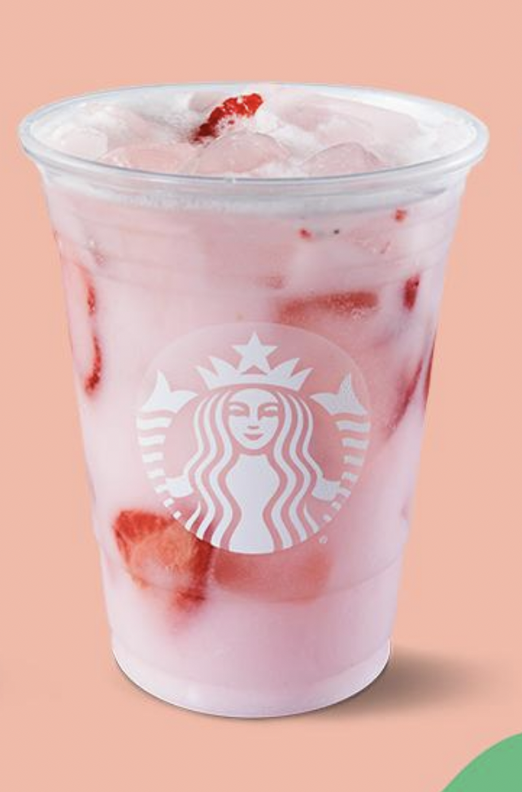
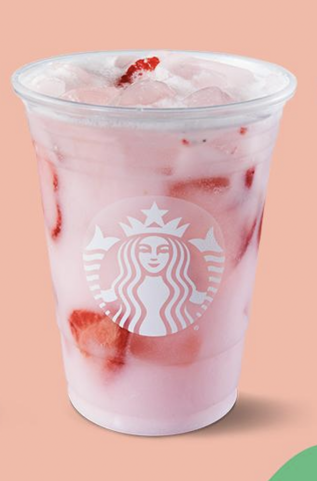

Daniela Gurrola
I am a philosophy major with an interest in psychology and English. Currently applying to law school, with the goal of becoming a probate lawyer. My experience includes serving as an intern at an immigration attorney’s office. I will graduate from the University of California, Riverside on the 9th of December, 2022. My interests include writing poetry, reading, playing video games and board games, and performing volunteer work. I also have experience working with children as a camp counselor. I attended Flintridge Sacred Heart Academy, graduating in the year 2019, and I currently work as a speech and debate judge for this institution. I am a philosophy major with an interest in psychology and English. Currently applying to law school, with the goal of becoming a probate lawyer. My experience includes serving as an intern at an immigration attorney’s office. I will graduate from the University of California, Riverside on the 9th of December, 2022. My interests include writing poetry, reading, playing video games and board games, and performing volunteer work. I also have experience working with children as a camp counselor. I attended Flintridge Sacred Heart Academy, graduating in the year 2019, and I currently work as a speech and debate judge for this institution. I am a philosophy major with an interest in psychology and English. Currently applying to law school, with the goal of becoming a probate lawyer. My experience includes serving as an intern at an immigration attorney’s office. I will graduate from the University of California, Riverside on the 9th of December, 2022. My interests include writing poetry, reading, playing video games and board games, and performing volunteer work. I also have experience working with children as a camp counselor. I attended Flintridge Sacred Heart Academy, graduating in the year 2019, and I currently work as a speech and debate judge for this institution. I am a philosophy major with an interest in psychology and English. Currently applying to law school, with the goal of becoming a probate lawyer. My experience includes serving as an intern at an immigration attorney’s office. I will graduate from the University of California, Riverside on the 9th of December, 2022. My interests include writing poetry, reading, playing video games and board games, and performing volunteer work. I also have experience working with children as a camp counselor. I attended Flintridge Sacred Heart Academy, graduating in the year 2019, and I currently work as a speech and debate judge for this institution. I am a philosophy major with an interest in psychology and English. Currently applying to law school, with the goal of becoming a probate lawyer. My experience includes serving as an intern at an immigration attorney’s office. I will graduate from the University of California, Riverside on the 9th of December, 2022. My interests include writing poetry, reading, playing video games and board games, and performing volunteer work. I also have experience working with children as a camp counselor. I attended Flintridge Sacred Heart Academy, graduating in the year 2019, and I currently work as a speech and debate judge for this institution.
Experience
Immgriation Law Intern
• Filed Client Records
• Managed the Front Desk
• Organized Files and Letters
Speech and Debate Judge
• Judged Lincoln-Douglas Rounds
• Judged Impromptu Rounds
Camp Counselor
• Created and Organized Activities
• Supervised Kids of All Ages
Education
UC Riverside
Portfolio


